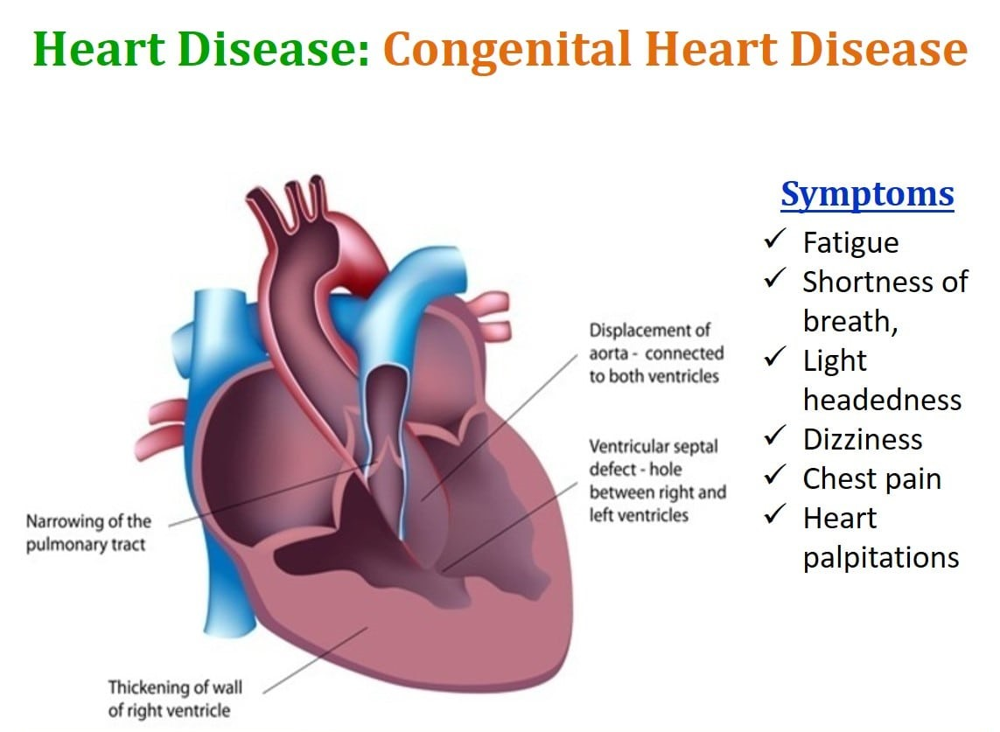
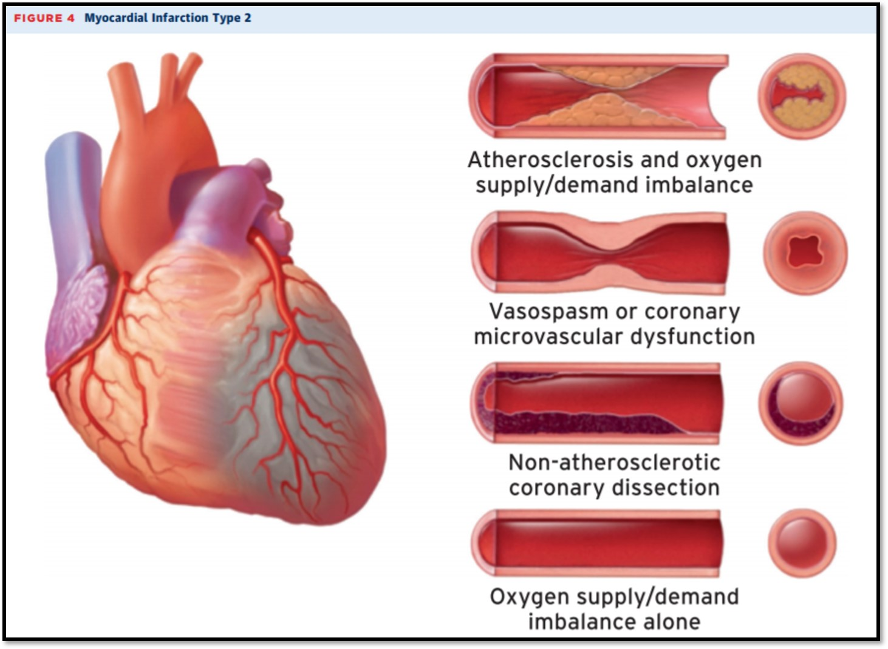
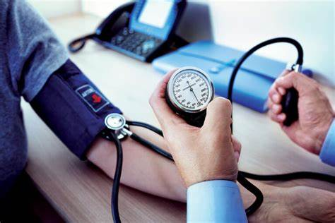

Cardiovascular Diseases
Cardiovascular diseases are conditions that affect the structures or function of your heart, such as:
Cardiovascular disease is the leading cause of death in the India. It’s important to learn about your heart to help prevent it. If you have it, you can live a healthier, more active life by learning about your disease and taking care of yourself. Types of cardiovascular disease can have various causes, so it’s important to know the difference.
Abnormal Heart Rhythms
The heart is an amazing organ. It beats in a steady, even rhythm, about 60 to 100 times each minute. That's about 100,000 times each day. Sometimes your heart gets out of rhythm. Your doctor calls an irregular or abnormal heartbeat an arrhythmia. An arrhythmia (also called a dysrhythmia) can bring on an uneven heartbeat or a heartbeat that is either too slow or too fast.
Aorta Disease and Marfan Syndrome
The aorta is the large artery that leaves your heart and brings oxygen-rich blood to the rest of your body. These two conditions can cause the aorta to widen or tear. This raises the chance of things like:
- Atherosclerosis (hardened arteries)
- High Blood Pressure
- Connective tissue disorders that can weaken your blood vessel walls, such as scleroderma, osteogenesis imperfecta, Ehlers-Danlos syndrome, and polycystic kidney disease
- Injury
Congenital Heart Diseases
This is a problem in one or more parts of the heart or blood vessels. It happens before birth. About 8 out of every 1,000 children get it. They may have symptoms at birth, but some people with it don’t have symptoms until childhood or even adulthood. In most cases, we don't know why it happens. Genes may play a role, or it can happen if a baby is exposed to viral infections, alcohol, or drugs before it’s born.
Heart Attack
A myocardial infarction (MI), commonly known as a heart attack, occurs when blood flow decreases or stops to the coronary artery of the heart, causing damage to the heart muscle. The most common symptom is chest pain or discomfort which may travel into the shoulder, arm, back, neck or jaw. Often it occurs in the center or left side of the chest and lasts for more than a few minutes. The discomfort may occasionally feel like heartburn. Other symptoms may include shortness of breath, nausea, feeling faint, a cold sweat or feeling tired. About 30% of people have atypical symptoms. Women more often present without chest pain and instead have neck pain, arm pain or feel tired. Among those over 75 years old, about 5% have had an MI with little or no history of symptoms. An MI may cause heart failure, an irregular heartbeat, cardiogenic shock or cardiac arrest.
Percardial effusion
A myocardial infarction (MI), commonly known as a heart attack, occurs when blood flow decreases or stops to the coronary artery of the heart, causing damage to the heart muscle. The most common symptom is chest pain or discomfort which may travel into the shoulder, arm, back, neck or jaw. Often it occurs in the center or left side of the chest and lasts for more than a few minutes. The discomfort may occasionally feel like heartburn. Other symptoms may include shortness of breath, nausea, feeling faint, a cold sweat or feeling tired. About 30% of people have atypical symptoms. Women more often present without chest pain and instead have neck pain, arm pain or feel tired.[ Among those over 75 years old, about 5% have had an MI with little or no history of symptoms.[ An MI may cause heart failure, an irregular heartbeat, cardiogenic shock or cardiac arrest.
Different symptoms of Heart Diseases
Heart disease describes a range of conditions that affect the heart. Heart diseases include:
- Blood vessel disease, such as coronary artery disease
- Irregular heartbeats (arrhythmias)
- Heart problems you're born with (congenital heart defects)
- Disease of the heart muscle
- Heart valve disease
Symptoms of heart disease in the blood vessels
Coronary artery disease is a common heart condition that affects the major blood vessels that supply the heart muscle. Cholesterol deposits (plaques) in the heart arteries are usually the cause of coronary artery disease. The buildup of these plaques is called atherosclerosis (ath-ur-o-skluh-ROE-sis). Atherosclerosis reduces blood flow to the heart and other parts of the body. It can lead to a heart attack, chest pain (angina) or stroke. Coronary artery disease symptoms may be different for men and women. For instance, men are more likely to have chest pain. Women are more likely to have other symptoms along with chest discomfort, such as shortness of breath, nausea and extreme fatigue. Symptoms of coronary artery disease can include:s
Heart disease symptoms caused by irregular heartbeats (heart arrhythmias)
The heart may beat too quickly, too slowly or irregularly. Heart arrhythmia symptoms can include:
- Chest pain or discomfort
- Dizziness
- Fainting (syncope) or near fainting
- Fluttering in the chest
- Lightheadedness
- Racing heartbeat (tachycardia)
Heart disease symptoms caused by congenital heart defects
Serious congenital heart defects usually are noticed soon after birth. Congenital heart defect symptoms in children could include:
- Pale gray or blue skin or lips (cyanosis)
- Swelling in the legs, belly area or areas around the eyes
- In an infant, shortness of breath during feedings, leading to poor weight gain
Less-serious congenital heart defects are often not diagnosed until later in childhood or during adulthood. Symptoms of congenital heart defects that usually aren't immediately life-threatening include:
- Easily getting short of breath during exercise or activity
- Easily tiring during exercise or activity
- Swelling of the hands, ankles or feet
Heart disease symptoms caused by diseased heart muscle (cardiomyopathy)
Early stages of cardiomyopathy may not cause noticeable symptoms. As the condition worsens, symptoms may include:
- Dizziness, lightheadedness and fainting
- Fatigue
- Feeling short of breath during activity or at rest
Heart disease symptoms caused by heart valve problems (valvular heart disease)
The heart has four valves — the aortic, mitral, pulmonary and tricuspid valves. They open and close to move blood through the heart. Many things can damage the heart valves. A heart valve may become narrowed (stenosis), leaky (regurgitation or insufficiency) or close improperly (prolapse).
Valvular heart disease is also called heart valve disease. Depending on which valve isn't working properly, heart valve disease symptoms generally include:
- Chest pain
- Fainting (syncope)
- Fatigue
- Irregular heartbeat
- Shortness of breath
- Swollen feet or ankles
Heart disease is the leading cause of the death in the India. It is also a major cause of disability. There are many things that can raise your risk for heart disease. They are called risk factors. Some of them you cannot control, but there are many that you can control. Learning about them can lower your risk of heart disease.
- Control your blood pressure. High blood pressure is a major risk factor for heart disease. It is important to get your blood pressure checked regularly - at least once a year for most adults, and more often if you have high blood pressure. Take steps, including lifestyle changes, to prevent or control high blood pressure. 
- Keep your cholesterol and triglyceride levels under control.High levels of cholesterol can clog your arteries and raise your risk of coronary artery disease and heart attack. Lifestyle changes and medicines (if needed) can lower your cholesterol. Triglycerides are another type of fat in the blood. High levels of triglycerides may also raise the risk of coronary artery disease, especially in women.
- Stay at a healthy weight. Being overweight or having obesity can increase your risk for heart disease. This is mostly because they are linked to other heart disease risk factors, including high blood cholesterol and triglyceride levels, high blood pressure, and diabetes. Controlling your weight can lower these risks
- Eat a healthy diet. Try to limit saturated fats, foods high in sodium, and added sugars. Eat plenty of fresh fruit, vegetables, and whole grains. The DASH diet is an example of an eating plan that can help you to lower your blood pressure and cholesterol, two things that can lower your risk of heart disease.
- Get regular exercise. Exercise has many benefits, including strengthening your heart and improving your circulation. It can also help you maintain a healthy weight and lower cholesterol and blood pressure. All of these can lower your risk of heart disease.
- Limit alcohol.Drinking too much alcohol can raise your blood pressure. It also adds extra calories, which may cause weight gain. Both of those raise your risk of heart disease. Men should have no more than two alcoholic drinks per day, and women should not have more than one.
- Don't smoke.Cigarette smoking raises your blood pressure and puts you at higher risk for heart attack and stroke. If you do not smoke, do not start. If you do smoke, quitting will lower your risk for heart disease. You can talk with your health care provider for help in finding the best way for you to quit.